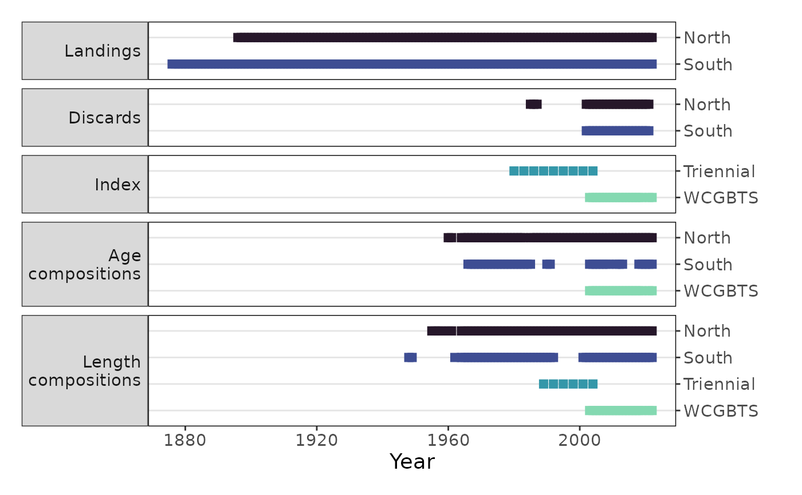

R/plot_data_availability.R
plot_data_availability.RdPlot the years in which each fleet has each type of data (landings,
discards, indices of abundance, and age and length compositions), as in
r4ss (SSplotData()), stockassessment (dataplot()), and spict
(plotspict.data()). Each type of data is a panel, each fleet a row, and
each year with data a square. It works with output from any model
converted with convert_output() and with input data for a FIMS model (a
FIMSFrame or the data from FIMS::get_data()).
plot_data_availability(
dat,
interactive = TRUE,
make_rda = FALSE,
figures_dir = getwd()
)A tibble from convert_output(), a FIMSFrame, or a data
frame of FIMS input data (FIMS::get_data()), with columns type,
fleet, timing, and observed.
Logical. TRUE/FALSE; indicate whether the environment is interactive.
Default: FALSE
Logical. TRUE/FALSE; indicate whether to save the object and
make an automated caption and alternative text in the form of an rda object. If TRUE,
the rda will be exported to the folder indicated in the argument "figures_dir".
Default: FALSE.
Path. Path to the "figures" folder.
Default: getwd()
The folder is created within the path if it does not exist.
A ggplot2 object.
The data are the observations in output from convert_output(),
found by their labels:
Landings: "landings_observed", "landings_observed_weight", "landings_observed_numbers", or "catch_observed", or "catch" when the output also has "catch_predicted". Only the first of these labels in the output is used, so that landings reported in more than one table are not shown twice.
Discards: "discard_observed".
Index: "index_observed".
Age and length compositions: "age_composition_observed" and "length_composition_observed", or the composition fit tables of Stock Synthesis ("all_obs_mean" in the age and length composition modules).
Compositions: "composition_observed", when the type of composition is not reported.
A year has data when it has an observation greater than zero. Fleets are
in alphabetical order from top to bottom. To plot only some fleets, filter
dat first (e.g., dplyr::filter(dat, fleet %in% c("fleet1", "fleet2"))).
FIMS input data are found by their type: "landings" or "catch"
(landings), "index", "age_comp", and "length_comp"; timing is the year,
and observations coded as missing (-999) are not data. Other types of
input (e.g., "weight_at_age") are not observations and are not shown.
All
modules are plotted, so interactive is not used; it is accepted for
consistency with the other plotting functions (e.g., in
save_all_plots()).
plot_data_availability(stockplotr::example_data)
